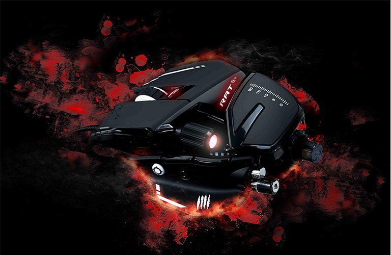
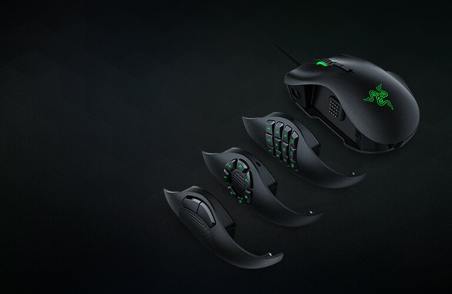

Моя история.
Компьютерная мышь – один из тех предметов, без которых не проходит ни один день нашей жизни, и мы представить себе не можем, что она выглядела как-то по-другому. Но на самом деле всеми любимый “грызун” не всегда был таким, каким мы его знаем и любим.
Мышка сейчас
С развитием технологий росли требования потребителей, уже никого не удивишь мышью построенной на оптическом датчике, а ведь когда-то она произвела настоящий фурор. Современные производители пытаются сделать мышки как можно более точными, долговечными и удобными. Уже не встает вопрос о цене, как раньше. Сегодня на рынке можно встретить огромное множество мышек на разный вкус и цвет: от простых лазерных мышек, до современных с оптическими переключателями и 2мя процессорами.

Mad Catz R.A.T 8+ - эта мышка удивляет не только своим дерзким дизайном, но и гибкостью настройки: на мышке можно настроить все! От веса самого “грызуна”, до его размеров.

Razer abyssus 2014 – одна из самых лучший игровых мышек по версии многих издательств.

Razer naga trinity - самая адаптивная мышка. Идущие в комплекте боковые панели подойдут даже истинному гурману. Кнопки, находящиеся сбоку настраиваются отдельно в специальном приложении.